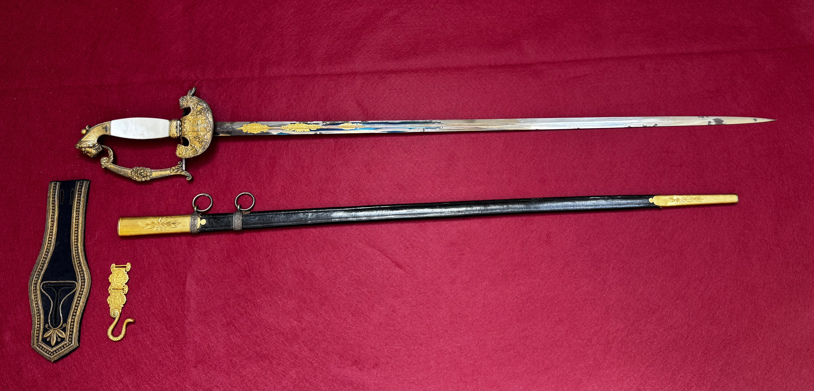
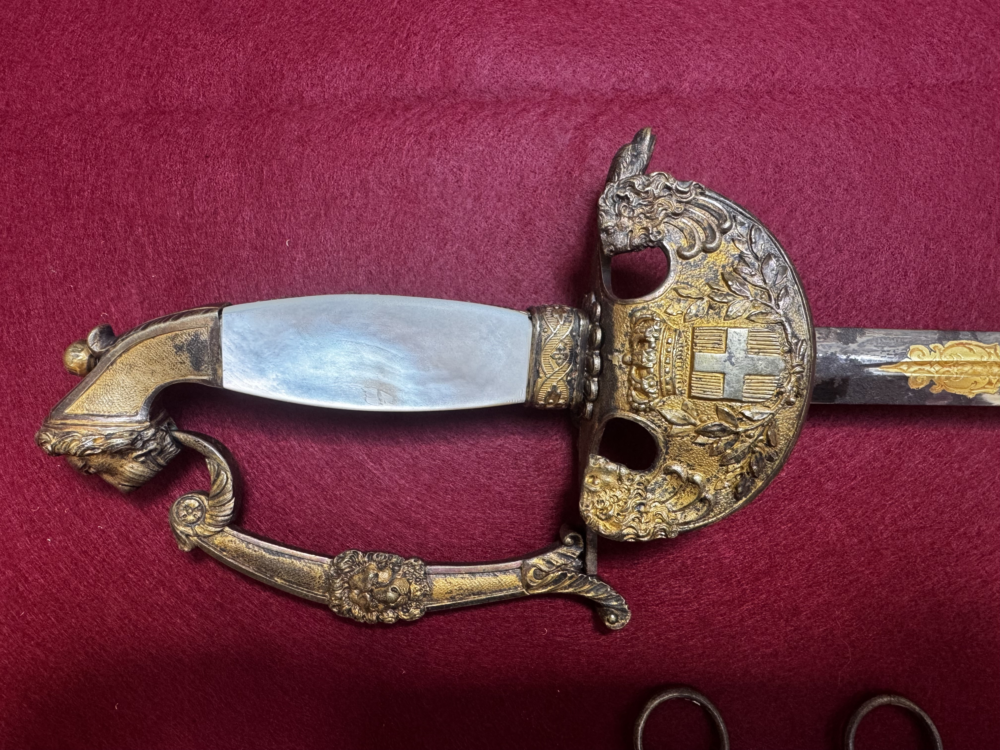
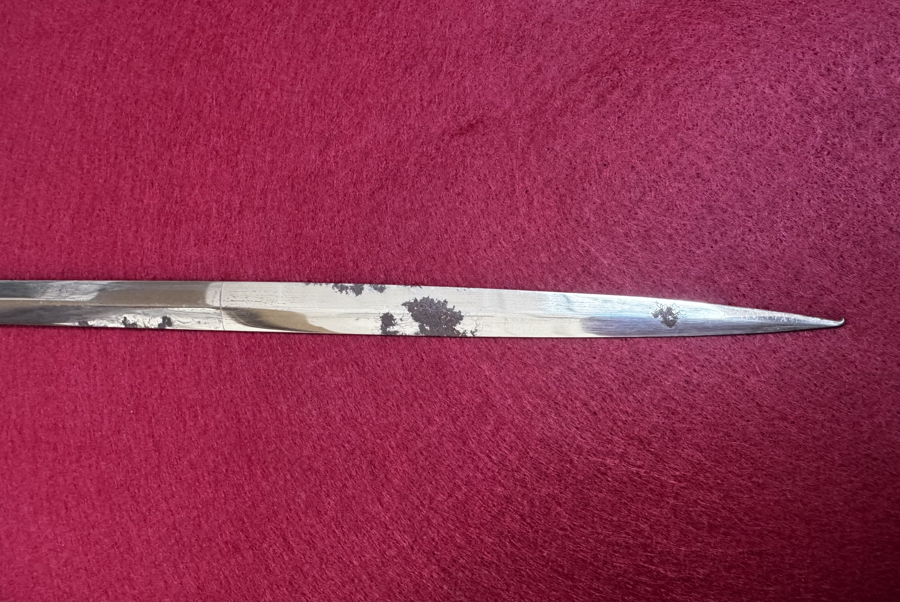
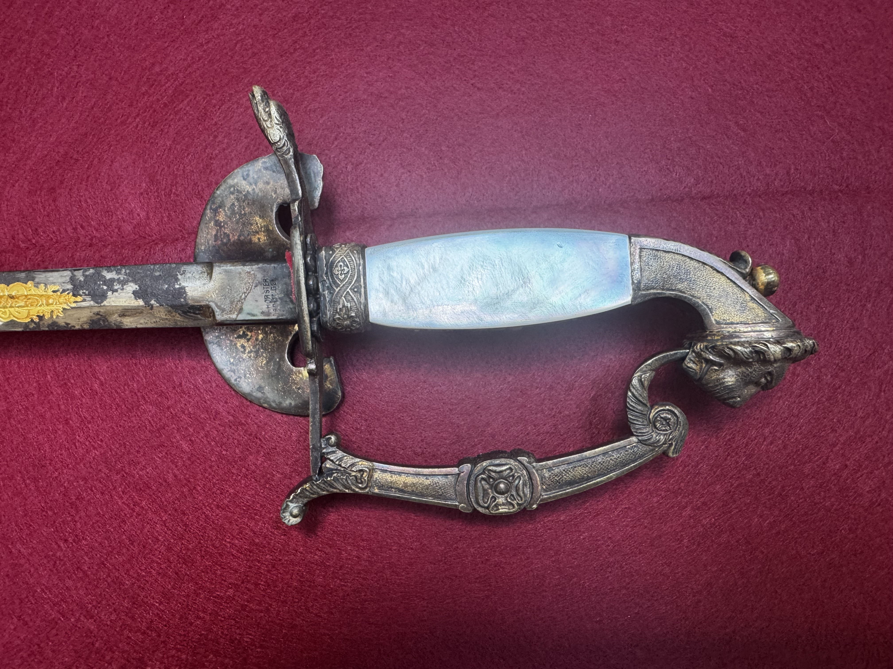
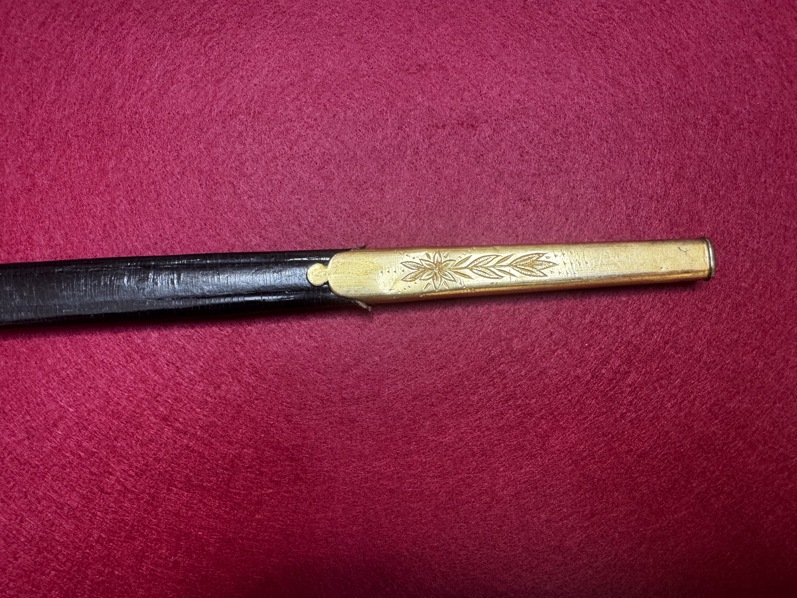

View 01
Primary artifact view.
Artifact record and analysis
Type / Pattern: Spanish Diplomatic / Civil Service Sword
Approx. Date: Late 19th to early 20th century
Origin: Spain – civil or diplomatic service issue
Current Status: Private collection (Historical Sword Society)
Abstract: The Spanish Diplomatic Sword represents a class of ceremonial weapons associated with civil service, diplomacy, and official state functions rather than battlefield use. Characterized by refined ornamentation and slender, thrust-oriented blades, these swords reflect status, authority, and national identity. Often decorated with heraldic motifs and national emblems, they served as visible indicators of rank and office within Spain’s administrative and diplomatic corps.
Use this section for detailed photographs: full length, hilt, pommel, markings, scabbard, and close-ups of condition.
Primary artifact view.

Supplementary artifact view.

Supplementary artifact view.

Supplementary artifact view.

Supplementary artifact view.

Supplementary artifact view.

Supplementary artifact view.

Supplementary artifact view.

Supplementary artifact view.

Supplementary artifact view.
| Overall length | [mm / in] |
| Blade length | [mm / in] |
| Blade width (at ricasso) | [mm / in] |
| Blade thickness (at ricasso) | [mm / in] |
| Point of balance | [mm / in from guard] |
| Weight | [g / lb] |
| Fullers | [description] |
| Edge geometry | [description] |
| Hilt material | [brass / steel / etc.] |
| Grip | [wood/leather/wire/etc.] |
| Scabbard | [present/absent; material; markings] |
Observed markings: [List spine, ricasso, guard, scabbard marks]
Interpretation: [Arsenal/manufacturer, inspector marks, unit marks, export marks]
Identification basis: [Pattern features, dimensions, comparison references]
References: Add citations to books, catalogs, museum collections, or archival documents.
[List acquisition details, prior owners (if known), dealer notes, and supporting documentation.]
{kind=link}
{kind=link}
{kind=link}
{kind=link}
{kind=link}